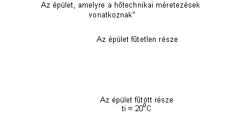
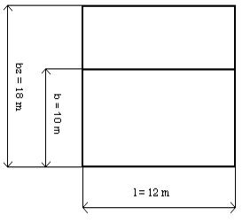
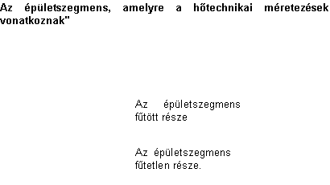
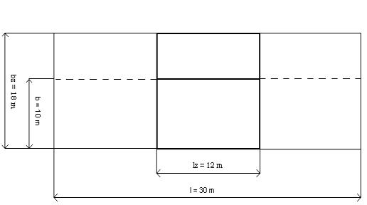

4.3.3. Az épület adatai
Ebben a pozícióban adjuk meg az épület általános adatait, a fekvésére, az árnyékoló elemekre vonatkozó információkat, valamint a kiválasztott éghajlati adatokat. Ez az épület szezonális energiaigényének számításához megkívánt teljes adatkör. Ennek az opciónak a kikapcsolásakor a szerkesztéshez számítandó adatok mennyisége kevesebb.
Itt
található a „Katalóguskezelés”  nyomógomb is, amely lehetõvé teszi, hogy
kiválasszuk a szükséges katalógusokat. A megfelelõ nyomógombra kattintva a
felhasználó ki tudja választani az éghajlati adatokat az „Éghajlati adatok”
könyvjelzõrõl.
nyomógomb is, amely lehetõvé teszi, hogy
kiválasszuk a szükséges katalógusokat. A megfelelõ nyomógombra kattintva a
felhasználó ki tudja választani az éghajlati adatokat az „Éghajlati adatok”
könyvjelzõrõl.
Az adatokat a következõ mezõkben adjuk meg:
Település
A "Település” mezõben kell a korábban kiválasztott éghajlati adatok katalógusából megadni azt a települést, ahol (vagy amelynek közelében) az épület található. Ekkor a legközelebbi meteorológiai állomást és a neki megfelelõ éghajlati zónát a program automatikusan választja ki. Abban az esetben, ha a program nem olvassa be az éghajlati adatokat a katalógusból, a felhasználónak magának kell a település nevére és az éghajlati övezetre vonatkozó adatokat beírnia. Ezen kívül nincs lehetõség a meteorológiai és aktinometrikus állomás adatainak kiegészítésére.
! A szezonális energiaigény kiszámításához a felhasználónak ki kell választania az éghajlati adatok katalógusát, és használnia kell a tervben. Ellenkezõ esetben a számítást a nem elegendõ számú éghajlati adat miatt nem lehet elvégezni.
Meteorológiai állomás
Ebben a mezõben jelenik meg az épület fekvésének megfelelõ állomás az adott településen (vagy annak közelében).
Aktinometrikus állomás
Ebben a mezõben jelenik meg a korábban kiválasztott meteorológiai állomásnak megfelelõ, legközelebbi aktinometriai állomás. Ez az adat határozza meg a szezonális energiaigény számításához nélkülözhetetlen éghajlati adatokat.
Az épület típusa
A legördülõ listában a felhasználó kétféle épülettípusból választhat:
- Csarnokszerû – a belsõ felosztás nélküli épületekre vonatkozik,
- Szintekre osztott – olyan épületekre vonatkozik, ahol az egyes épületszintek légzáró födémmel vannak elválasztva.
A település széljárása
A legördülõ listában a felhasználó a környezet kétféle széljárástípusából választhat:
- Szélmentes környezet – a 2 m/s és 4 m/s között elõforduló sebességek jellemzik. Ide tartoznak pl. a városközpontok, a beépített területek, stb.
- Szeles környezet – a 4 m/s és 6 m/s közötti tartományban elõforduló sebességek jellemzik. Ide tartoznak pl. a tengerparti, a hegyek lábánál fekvõ és a beépítetlen területek.
Az alapok körvonalainak fajtája (az épület alaprajza)
A legördülõ listából, az épület alaprajzától függõen, a felhasználó kétféle épülettípusból választhat:
- I. típus (szabadon álló) – szabadon álló épületek, némelyik esetben három oldalról nem takart házak,
- II. típus (soros beépítés) – olyan házak, amelyeknél a térelhatárolók úgy lettek megtervezve, hogy a levegõ az épület belsejébe csak egy külsõ falon keresztül jut áramlik be. Ide tartoznak a soros beépítésû épületek, vagy azok a szabadon álló épületek, amelyeknél az oldalak hosszának viszonya a szélességéhez nagyobb, mint 5.
A beépítés típusa:
A legördülõ listában a felhasználó kétféle beépítéstípusból választhat:
- Normális – ez a városi, sûrûn lakott területekre, pl. városközpontokra, valamint falusi területekre jellemzõ beépítéstípus.
- Szabad – a szigeteken, közvetlenül a tengernél, nagy tavaknál, hegycsúcsokon, beépítetlen területeken álló épületekre jellemzõ.
te/qe (Külsõ hõmérséklet)
A településtõl függõen a program megadja a külsõ hõmérsékletet, vagyis hozzárendeli azt az éghajlati övezethez. Abban az esetben, amikor nem választottuk ki az éghajlati katalógust a tervben, a felhasználónak magának kell beírni a külsõ hõmérsékletet.
lgr (A talaj hõvezetési tényezõje)
A program hozzárendeli azt a talajfajtát, amelyre a hõvezetés lgr = 1,2 W/mK. Új terv megnyitásakor ellenõrizni kell, hogy a talaj hõtani tulajdonságaira vonatkozó, alapértelmezett értékeket a terv használja-e. Ha a felhasználó ismeri a talaj fajtáját, akkor az aktuális adatok szerint kitölti a mezõt.
T (A talajvíz mélysége)
A szabvány alapján T=10m az elfogadott. Ha a felhasználó más adatokkal rendelkezik a talajvíz mélységére vonatkozóan azon a területen, ahol az épület áll, akkor a mezõt önállóan tölti ki.
ttv (A talajvíz átlagos hõmérséklete)
A szabvány alapján ttv=100C az elfogadott. A talajvíz közepes hõmérsékletének értéke a kijelölt tartományon belül van.
b (A talajon levõ padló szélessége a fûtött helyiségekben)
A felhasználó maga tölti ki a belsõ méretek alapján. A program automatikusan is meg tudja határozni a méreteket az Instal-therm programból beolvasott épület alaprajz alapján. A program lehetõséget ad a számítási módok közötti átkapcsolásra az épület mindkét vízszintes méretére közös ikonnal az automatikus számításokhoz, valamint az ikonnal, ami lehetõvé teszi ennek az értéknek a megadását. A helyes interpretálást illusztráló példa az alábbiakban látható.
l (A talajon levõ padló hosszúsága a fûtött helyiségekben)
A felhasználó maga tölti ki a belsõ méretek alapján. A program automatikusan is meg tudja határozni a méreteket az Instal-therm programból beolvasott épület alaprajz alapján. A program lehetõséget ad a számítási módok közötti átkapcsolásra az épület mindkét vízszintes méretére közös ikonnal az automatikus számításokhoz, valamint az ikonnal, ami lehetõvé teszi ennek az értéknek a megadását. Az érték helyes interpretálását illusztráló példa az alábbiakban látható.
Aong (A fûtött helyiség területe a talajon)
A felhasználó maga tölti ki a talajon levõ fûtött helyiségek külsõ méretei szerint. Ha a fûtött helyiségek területe a talajon megfelel az épület belsõ méreteinek, a felhasználó átkapcsolhat az automatikus számítási módra az ikon segítségével. Az érték helyes interpretálását illusztráló példa az alábbiakban látható.
Példa a fûtött helyiségekben, a talajon levõ padló hosszának és szélességének helyes interpretálására.
Általában kétféle esetet lehet megkülönböztetni a fûtött helyiségekben, a talajon levõ padlók hosszára és szélességére vonatkozóan.
1. Az elsõ eset az, amikor a figyelembe vett padlóterület megegyezik azon épület fûtött helyiségeiben, ahol ezek a padlók találhatók, a talajon levõ padlók felületeinek összegével. Ez a helyzet vonatkozik minden egyedülálló épületre.
A fûtött helyiségek területe a talajon egyenlõ:
Aong = l*b
ahol:
l – a padló hossza a talajon a fûtött helyiségekben = az épület fûtött részének a hossza,
b – a padló szélessége a talajon a fûtött helyiségekben = az épület fûtött részének a szélessége.


1. ábra. Szabadon álló épület alaprajza – földszint
2. A második eset arra vonatkozik, amikor a figyelembe vett padlóterület egy része azon épület fûtött helyiségei talajon levõ padlói alapterületének, amelyben találhatók. Ez a helyzet a soros beépítésû épületekre vonatkozik. Ekkor az épületek alatt az épületszegmensek összességét értjük, azonban az az objektum, amelyre a hõtani méretezés vonatkozik, az épület egy szegmense.
A fûtött helyiségek területe a talajon egyenlõ:
Aong = l*b


2. ábra Az épületszegmens alaprajza – földszint
ahol:
l – a padló teljes hossza a talajon a fûtött helyiségekben = az épület fûtött részének a hossza,
b – a padló teljes szélessége a talajon a fûtött helyiségekben = az épület fûtött részének a szélessége.
Nem szabad az „l” és „b” értékeket a figyelembe vett szegmens talajon levõ padlójának hosszával és szélességével összetéveszteni. Ezek az értékek a teljes épületnek csak a fûtött részére vonatkoznak.
Dtk (A külsõ hõmérséklet korrekciója)
A program az épület térelhatárolóinak súlyától függõen átszámolja a külsõ hõmérséklet korrekcióját.
Ha a felhasználó behelyezi az épületstruktúrába az összes belsõ és külsõ térelhatárolót, a program kiszámolja a külsõ hõmérséklet korrekciójának pontos értékét.
Ha a felhasználó elmulasztja azon belsõ térelhatárolók beállítását, amelyeken nincs hõcsere, akkor a korrekció kisebb lehet, mint az, amely a pontos számításból következne. A felhasználó az ilyen számítások ellenõrzésére kiválaszthat egy reprezentatív, azaz belsõ és külsõ térelhatárolókkal rendelkezõ helyiséget. A reprezentatív helyiségben használt külsõ és belsõ térelhatárolók alapján, amelyek a „Térelhatároló-definíciókban” meg lettek adva, a program kiszámolja a külsõ hõmérséklet Dtk korrekcióját. Ahhoz, hogy állandóra megadjuk a számításokhoz, a felhasználónak, az ikonra kattintás után, be kell írnia „Dtk” mezõbe. Ekkor a belsõ levegõ hõmérséklete ennek a korrekciónak az alapján van meghatározva. Most be lehet tenni a soron következõ helyiségeket az épületstruktúrába.
Ha a felhasználó tudja, hogy milyen az épület térelhatárolójának a súlya, akkor maga is beírhatja a megfelelõ értéket a „Dtk” mezõbe (a szabványnak megfelelõen) átkapcsolva az ikonra. Ennek az értéknek az alapján a program helyesbíti a külsõ levegõ hõmérsékletét.
w10 (az átlagos szélsebesség 10 m magasságban)
A program a 10 m magasságban fellépõ átlagos szélsebességet az éghajlati katalógus adatai alapján fogadja el..
Az épület takarásának osztálya
A legördülõ listában a felhasználó a következõ lehetõségekbõl választhat:
- Nincs takarás – a nyílt területen álló, és a városközpontokban levõ, magas épületeket jellemzi,
- Közepesen takart – a fák vagy más épületek között álló, valamint az elõvárosi épületeket jellemzi,
- Nagyon takart – a városközpontokban, erdõkben levõ, közepesen magas épületeket jellemzi.
QL/FL – Az ember által kibocsátott, napi közepes hõáram [W]
Az ember által egy nap alatt kibocsátott közepes hõáram. Az ember aktivitásától és tömegétõl függ. A program által, a nyugalomban levõ emberre vonatkozó szabvány alapján automatikusan kitöltött mezõ.
Qkf/Fkf – Az egy lakóra jutó használati melegvízbõl származó napi közepes hõáram [W]
Az egy nap alatt egy lakóra jutó, a használati melegvízbõl származó napi közepes hõáram. Ez egy bizonyos, normatívan megállapított, állandó érték.
Qme/Fme – A fõzésbõl származó napi közepes hõáram a lakásra [W]
Az egy nap alatt egy lakásra esõ, a használati melegvízbõl származó napi közepes hõáram. Ez egy bizonyos, normatívan megállapított, állandó érték.
Qel/Fel – Az elektromos berendezésekbõl származó napi közepes hõáram a lakásra [W]
Az egy nap alatt egy lakásra esõ, az elektromos berendezésekbõl származó napi közepes hõáram egy lakásra. Az értéke a lakásban beépített berendezések mennyiségétõl és fajtájától függ. A mezõbe egy bizonyos átlagosnak elfogadott érték lett beírva. Ha a helyiséget más hõnyereségek jellemzik, akkor a mezõbe az aktuális értékeket kell beírni.
IÉNY (Az akadály távolsága ÉNY irányból)
Ebbe a mezõbe írja be a felhasználó az árnyékoló akadálynak az épülettõl való távolságát északnyugati irányból.
HÉNY (Az akadály magassága ÉNY irányban)
Ebbe a mezõbe írja be a felhasználó az árnyékoló akadálynak a magasságát északnyugati irányban.
A többi égtáj irányából árnyékoló elemek adatait analóg módon kell kitölteni, megadva a távolságukat és magasságukat. Ezek a mezõk az épületnek az olyan tényezõktõl származó árnyékolásának a meghatározására szolgálnak, mint a: terepegyenetlenségek, más épületek elõfordulása, fák vagy más tereptárgyak a vizsgált épület körül.
Az épület elforgatása
A felhasználó „Az épület elforgatása” nyomógomb használatával megadhatja az épület elfordításának szögét az égtájakat mutató „iránytûhöz” képest. A térelhatárolóknak a tervben megadott a tájolása az épületben megváltoztatható az elfordítás szögének kiválasztásával az „iránytûn”. A felhasználó ezt az irány (égtáj) kiválasztásával hajtja végre. Az épület el lesz forgatva a kiindulási helyzetéhez képest, a megadott abszolút szöggel. Ennek az adatnak a megváltoztatása után minden belsõ térelhatároló, ablak és ajtó tájolása megváltozik. Abban az esetben, ha a tervet a 3.2 verzióból importáljuk, itt meg lehet adni ugyanazt a szöget, ami a program korábbi verziójában meg lett adva.